1簡介
本程式以 C++ 與 Qt 框架實作課本的 Voronoi diagram 演算法：1 到 3 點作為 base case，以暴力法直接求解；4 點以上採用 divide and conquer，遞迴求出左右兩半的 Voronoi diagram 後再 merge。
- 以 Windows 11、C++、Qt 6.10.1 框架實作（Qt Creator 18.0.1 IDE）。
- 能夠繪製 Voronoi diagram，並支援 convex hull 的繪製。
- 可以點擊 Run 直接顯示最終結果，也能以 Step by step 觀察每一步的變化。
2軟體規格書
2.1輸入與輸出（資料）規格
| 方式 | 操作 |
|---|---|
| 滑鼠點選 | 直接於畫布上點擊新增點，座標四捨五入為整數。 |
| 手動輸入 | 於右下角欄位輸入 (X, Y) 座標（範圍 0 ~ 610）後點擊 Add。 |
| 輸入格式檔 | ，或工具列 （自動判斷輸入或輸出格式）。 |
| 輸出格式檔 | ，或工具列 ，讀入後直接顯示圖形。 |
輸入格式檔分為「含註解」與「不含註解」兩種，可包含多筆測資。每筆測資第一行為點的數量 n，接下來 n 行為點的座標（以空白或 Tab 分隔），檔案最後一行為 0 表示結束；# 之後的內容為註解。讀入檔案後先畫出第一筆測資的結果，狀態列顯示目前是第幾筆；點選工具列的 畫出下一筆。最後一筆之後再點選 Next test case，若檔案以 0 結尾，會顯示「讀入點數為零，檔案測試停止」。
#雙點測試
2
200 200
200 200
0輸出格式檔前半段為點座標（P x y），後半段為線段座標（E x1 y1 x2 y2），兩者皆依 lexical order 排序：先比較 x 座標，相同時再比較 y 座標。線段的起點與終點滿足 x1 < x2，或 x1 = x2 且 y1 ≤ y2。射線只計算到畫布邊界（座標範圍 [0, 610]），座標以整數表示（無條件捨去），重複的點只輸出一次。存檔方式為 或工具列 。
P 103 200
P 193 64
P 193 370
P 283 200
E 0 34 193 161
E 0 363 193 261
E 193 161 193 261
E 193 161 437 0
E 193 261 610 4812.2功能規格與介面規格
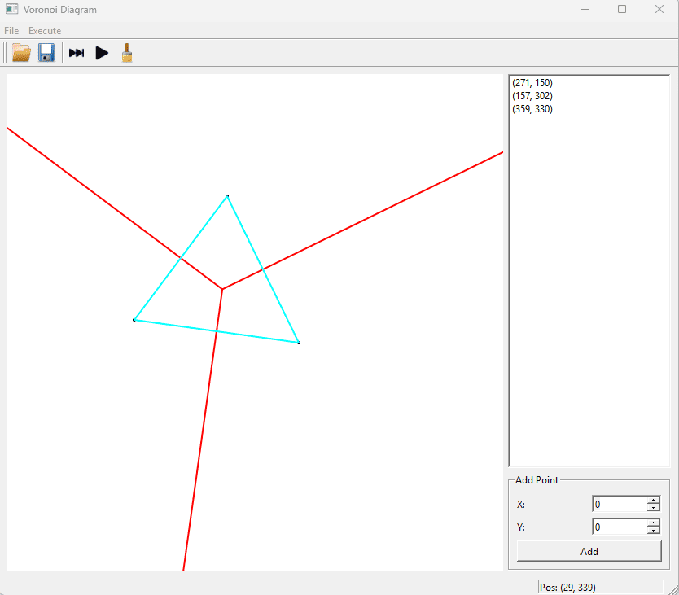
| 位置 | 元件 | 功能 |
|---|---|---|
| 左側 | 畫布 | 610 × 610，固定大小，左上角為原點 (0, 0)。 |
| 左上 | 選單 | ：Read input text、Read output text、Save ：Step、Run、Clear |
| 左上 | 工具列 | Open、Next test case、Save、Step、Run、Clear |
| 右上 | 點座標列表 | 顯示畫布上所有點的座標，重複的點只顯示一次。 |
| 右下 | Add Point | 輸入 (X, Y) 座標後按 Add 新增點。 |
| 右下 | Test case | 讀入輸入檔後，顯示目前是第幾筆測資；讀入輸出檔或按 Clear 後清除，Next test case 也隨之停用。 |
| 右下 | Pos | 即時顯示滑鼠在畫布上的位置。 |
| 顏色 | 意義 |
|---|---|
| 紅 | Voronoi edges（最終結果） |
| 青 | Convex hull |
| 藍 | Step by step：左半 Voronoi diagram |
| 綠 | Step by step：右半 Voronoi diagram |
| 洋紅 | Step by step：hyperplane |
2.3軟體測試規劃書
期中目標：三個點（含）以下。
- 一個點：不須做任何動作。
- 兩個點：找兩點中垂線。
- 三個點：先找三點（三角形）外心，從外心出發往三邊法向量方向畫射線。
期末目標：四個點以上，divide 成左右兩半，遞迴分割直到點數縮減為可使用暴力解的 1 ~ 3 點，再將左右兩半的解 merge，最終 merge 成原本的解。
3軟體說明
3.1安裝說明
執行檔位於 exe 資料夾：VoronoiDiagram.exe，不需安裝，直接執行即可。執行檔需與下列檔案放在同一個資料夾（exe 資料夾中皆已附上，請勿移除）。已在 PATH 中不含 Qt 與 MinGW 的環境下測試，可正常開啟。
| 類別 | 檔案 |
|---|---|
| Qt 函式庫 | Qt6Core.dll Qt6Gui.dll Qt6Widgets.dll |
| MinGW 執行環境 | libgcc_s_seh-1.dll libstdc++-6.dll libwinpthread-1.dll |
| Qt 外掛 | platforms/qwindows.dll（必要） styles/qmodernwindowsstyle.dll（視窗樣式） |
3.2編譯說明
編譯環境為 Qt 6.10（MinGW 64-bit）、C++17、qmake，本機以 Qt 6.10.1 與 MinGW GCC 13.1.0 驗證。
方法一：Qt Creator。開啟專案檔 VoronoiDiagram.pro，選擇 Kit Desktop Qt 6.10.1 MinGW 64-bit，左下角切換為 Release 後按 Build，再按 Run。
方法二：命令列。在 cmd 中執行以下指令（Qt 的安裝路徑請依實際情況修改），完成後執行檔位於 build-release\release\VoronoiDiagram.exe。
set PATH=C:\Qt\6.10.1\mingw_64\bin;C:\Qt\Tools\mingw1310_64\bin;%PATH%
mkdir build-release
cd build-release
qmake ..\VoronoiDiagram.pro CONFIG+=release
mingw32-make打包時，在同一個 cmd 視窗執行以下指令，會將執行所需的 DLL 與外掛複製到執行檔旁；或依表 4 手動複製所需檔案。
windeployqt --release --no-translations release\VoronoiDiagram.exe3.3使用說明
以任一種輸入方式（表 1）加入點，例如直接在畫布上任意點擊四個點，再點擊工具列上紅框標示的 Step，即可逐步觀察 merge 的過程，每次 merge 共有 7 個 step；點擊 Run 則直接畫出最終結果。

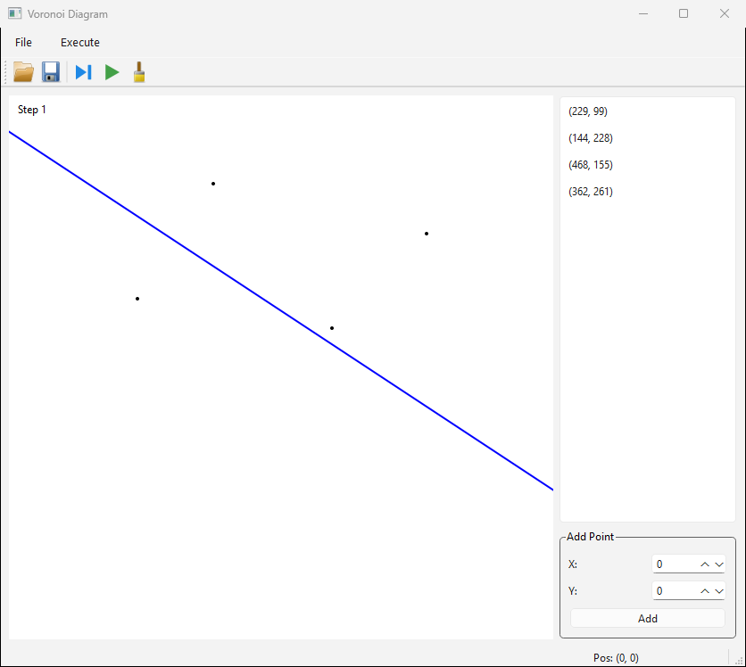
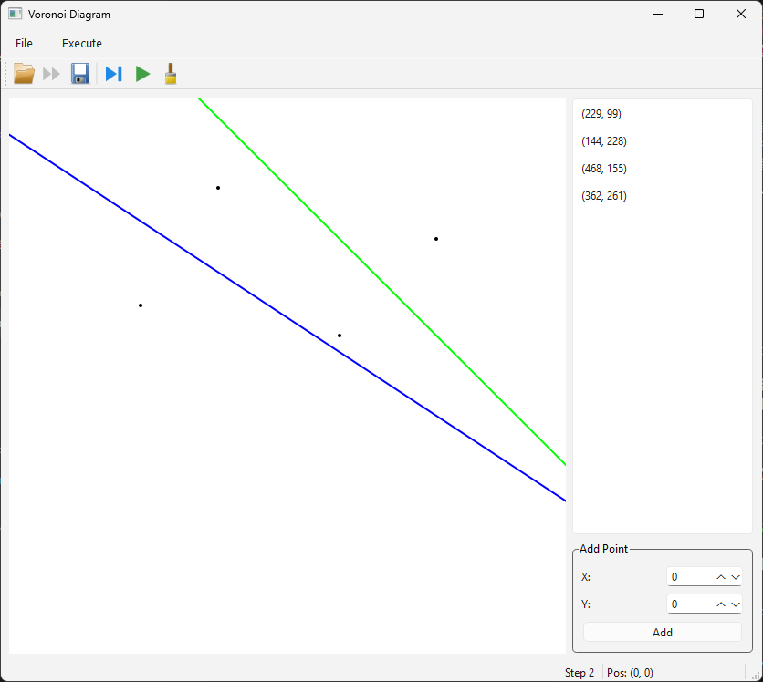
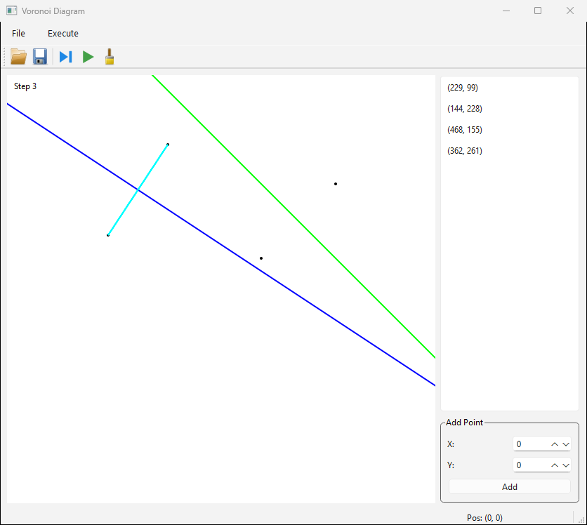
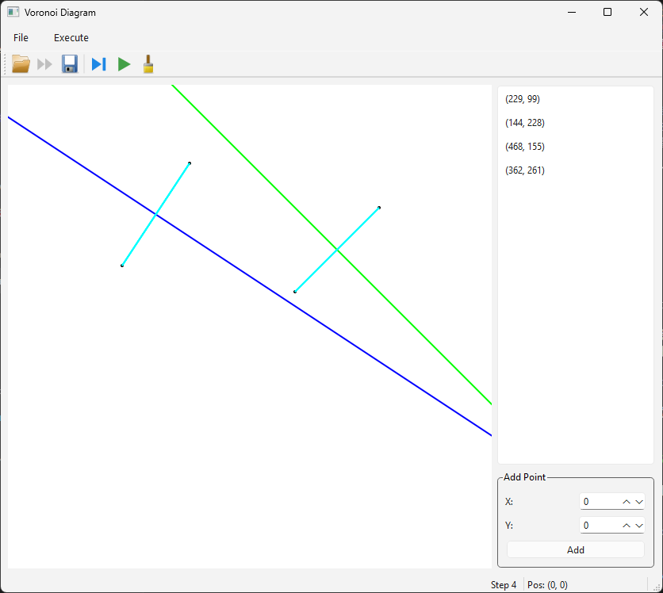

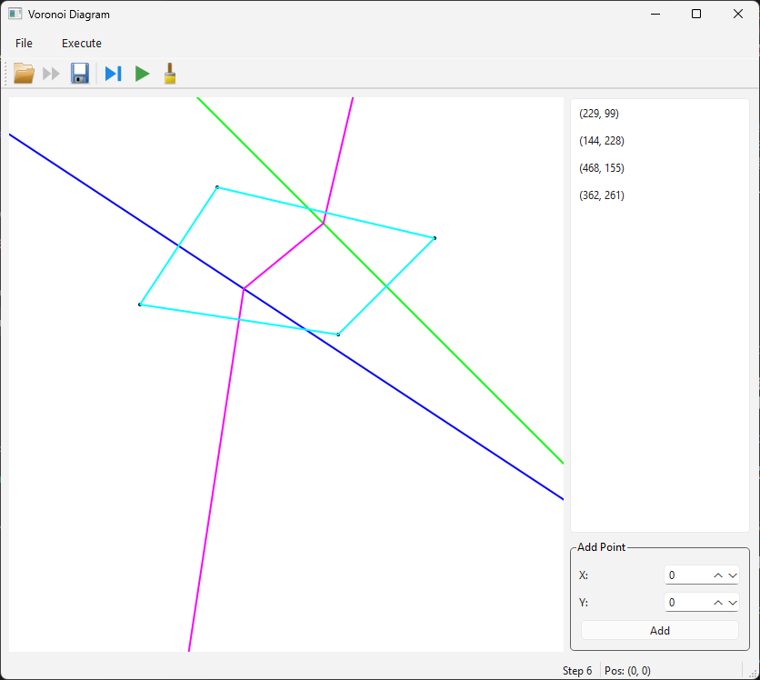
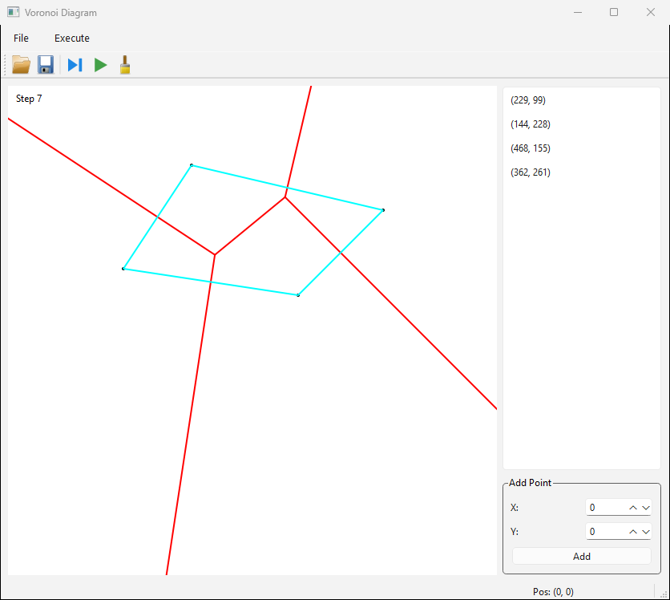
4程式設計
4.1資料結構
點與線分別採用 Qt 框架中的 QPointF 與 QLineF 類別，另外自訂以下資料結構。
// 儲存結果
struct VoronoiResult {
QVector<QLineF> edges; // Voronoi edges
QVector<QPair<QPointF, QPointF>> endPoints; // Record which two points (p1, p2) generated edges[i]
QVector<QPointF> convexHull; // Sort in counterclockwise order
};
// 用於 step by step
struct VoronoiStep {
QVector<QLineF> currentEdges; // All edges at the current step (including left, right, and hyperplanes)
QVector<QPointF> currentHull; // The merged convext hull, the left one, the right one
QVector<int> edgeTypes; // Indicates the edge type (0: Normal, 1: Left voronoi, 2: Right voronoi, 3: Hyperplane)
QString description; // For debugging
int split; // 0: Merged convex hull, not 0: lefthull = currentHull.mid(0, split), righthull = currentHull.mid(split)
};
// 使 QMap 能以 QPointF 作為 Key (容許些微浮點數誤差)。
class PointKey {
public:
QPointF p;
double r; // Distance from a Voronoi vertex to its generating points
PointKey(QPointF _p, double _r = 0) : p(_p), r(_r) {}
bool operator<(const PointKey& other) const;
};PointKey 的 r 為 Voronoi 頂點到其生成點的距離。左右兩個 Voronoi diagram 可能在同一個位置各有一個頂點，但位於不同的圓上（例如網格），需以「位置 + r」才能區分。
4.2座標系與前處理
- 左上角為原點 (0, 0)，往右為 +x 軸方向，往下為 +y 軸方向。
- 一開始先將點以 lexical order 排序，並將重複的點移除。
- 以向量（射線）來處理線段，若向量方向往右，則法向量方向往上。
- 射線以「單位方向 × 極大長度（
FAR = 1e10）」表示延伸到無限遠，座標超過FAR / 2的端點視為無限遠端點；繪圖與存檔時再裁切到畫布範圍。
4.3三點以下與共線
- 兩點：視為共線。
- 共線：各相鄰兩點畫中垂線。遞迴過程中的子問題若所有點共線（例如網格中同一行的點），也直接以此方式求解，不進行 merge。
- 三點：先求三點（三角形）之外心，以外心為起點，向三個邊的法向量方向畫射線。若邊的法向量方向（圖 10 紅實線）與中點往第三點的方向（藍實線）相同（dotProduct > 0），射線方向要改為反方向（紅虛線）。
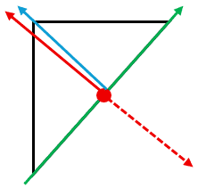
4.4四點以上：Divide and conquer
VoronoiResult VoronoiDiagram::divideAndConquer(const QVector<QPointF>& points) {
VoronoiResult res;
int n = points.size();
if (n == 1)
res.convexHull.append(points[0]);
else if (n == 2 || areAllCollinear(points)) // Collinear sub-problems are solved directly
res = solveCollinear(points);
else if (n == 3)
res = voronoi3(points);
else {
// Divide
int m = n / 2;
QVector<QPointF> leftPoints = points.mid(0, m), rightPoints = points.mid(m);
VoronoiResult leftRes = divideAndConquer(leftPoints), rightRes = divideAndConquer(rightPoints);
// Merge
res = merge(leftRes, rightRes);
}
return res;
}- Base case：三點以下直接暴力解。
- Divide：點已依 x 座標排序，切成左右各一半的點，分別遞迴求出左右兩半的 Voronoi diagram。
- Merge 是最困難的部分，分成合併凸包、找 hyperplane、消線三個步驟（4.5 ~ 4.7）。
4.5Merge 一：合併凸包
找出左右 convex hull 的上、下切線，並 merge 左右 convex hull（參考 Solving the convex hull problem using divide and conquer）。
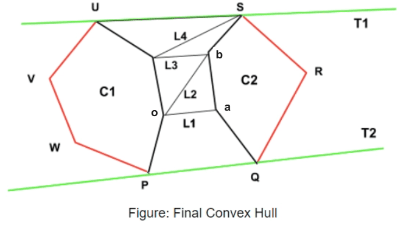
- 先找左凸包最右點、右凸包最左點，連線如圖 11 的 L1。若有多個點 x 座標相同，左凸包取 y 最大、右凸包取 y 最小的點（即 lexical order 的最後一點與第一點），以免選到共線邊上外側的點。
- 接著找上（下）切線：若連線穿過左右凸包，則需移動端點，左凸包逆（順）時針移動，右凸包順（逆）時針移動。
- 以 cross product 判斷是否穿過凸包。二維的 cross product 可將 z 分量視為 0 計算，結果只有 z 分量，可視為一純量：oa = (x1, y1)、ob = (x2, y2) 時，cross product = x1y2 − y1x2。注意此座標系的 +y 軸往下，與笛卡兒座標系不同；依右手定則，結果 > 0（< 0）時拇指垂直進入（出來）xy 平面，其餘四指為順（逆）時針旋轉。
- 以找上切線 T1 為例：L1 穿過右凸包（cross product < 0），右凸包順時針移動得到 L2；L2 穿過左凸包（cross product > 0），左凸包逆時針移動得到 L3；依此類推，L4 再移動後得到 T1。
- 得到上下切線後，以逆時針方向收集端點：從左凸包上切點 (U) 到左凸包下切點 (P)，再從右凸包下切點 (Q) 到右凸包上切點 (S)，得到 U, V, W, P, Q, R, S 為 merge 後的所有端點。
4.6Merge 二：Hyperplane
Hyperplane 是由多段 L 與 R 的垂直平分線所組成的折線。
從 upper tangent 的 (L, R) 開始，hyperplane 從無限遠處往下走
↓
計算目前左右點 (L, R) 的垂直平分線
↓
找此平分線往下最先與 L 或 R 區域的哪些 Voronoi edge 相交
(交點 = L、R 與該邊另一個生成點的外心)
↓
沒有交點 → 剩下的平分線為射向無限遠的射線，結束
有交點 → 同一個交點上的所有邊一起處理，決定下一組 (L, R)
↓
重複此步驟- 一般情況：與左側邊相交 → 更新 L；與右側邊相交 → 更新 R；同時與左右側邊相交 → 兩者都更新。
- 四點以上共圓（例如網格）時，同一個交點會撞到多條邊。此時所有生成點都在以交點為圓心的同一個圓上，從進入的 hyperplane 開始往 L 的方向量角度，依序為 L、…、新 L、新 R、…、R，因此新 L 取左側生成點中角度最大者，新 R 取右側生成點中角度最小者。
4.7Merge 三：消線
- 與找 hyperplane 一起進行：在交點處，進入與離開的 hyperplane 把平面分成兩側（靠 L 的為左側）。被撞到的左 Voronoi 邊只保留在左側的部分、右 Voronoi 邊只保留在右側的部分，另一端更新為交點；若整條邊都在錯誤的一側則直接移除。
- 此外需移除 dangling edges，即完全未與 hyperplane 相交、位於錯誤一側的邊：反覆移除「有一端為非無限遠、且度數 ≤ 1 的頂點」的邊。頂點以「位置 + 到生成點的距離
r」辨識（見 4.1）。
4.8Step by step
每次 merge 分為 7 個步驟逐步呈現，每按一次 Step 前進一步。
| Step | 動作 | 顏色 |
|---|---|---|
| 1 | 畫左半 Voronoi diagram | 藍 |
| 2 | 畫右半 Voronoi diagram | 綠 |
| 3 | 畫左半 convex hull | 青 |
| 4 | 畫右半 convex hull | 青 |
| 5 | 畫 merge 後的 convex hull | 青 |
| 6 | 畫 hyperplane | 洋紅 |
| 7 | 消線，最終結果 | 紅 |
5軟體測試與實驗結果
5.1測試環境
| 處理器 | Intel(R) Core(TM) i5-14500（2.60 GHz） |
| 記憶體 | 8.00 GB（7.64 GB 可用） |
| 作業系統 | Windows 11 Education 25H2，64 位元，x64 處理器 |
| 開發工具 | Qt Creator 18.0.1 |
| 框架 | Qt 6.10.1 |
| 語言 | C++ |
| 編譯器 | GCC 13.1.0（64-bit） |
5.2測試輸入檔與輸出檔
每個輸入檔包含多筆測資，每筆測資各有一個以 Save 功能產生的輸出檔，檔名為「輸入檔名_第幾筆測資」。
| 測試輸入檔 | 內容 | 測試輸出檔 |
|---|---|---|
| 2~3point.txt | 2 ~ 3 點，9 筆 | 123456789 |
| 4~15point.txt | 4 ~ 15 點，11 筆 | 1234567891011 |
| 52,77,92,150,200.txt | 52、77、92、150、200 點 | 527792150200 |
| collinear.txt | 特例：共線，6 筆 | 123456 |
5.3實驗結果
以下為各點數的執行結果，點擊圖片可檢視原尺寸。

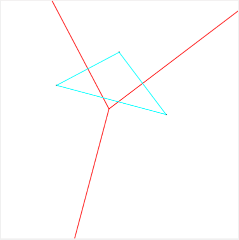

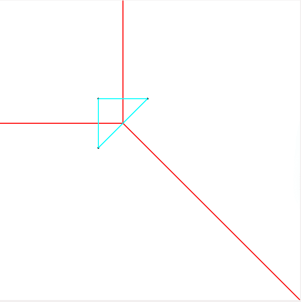
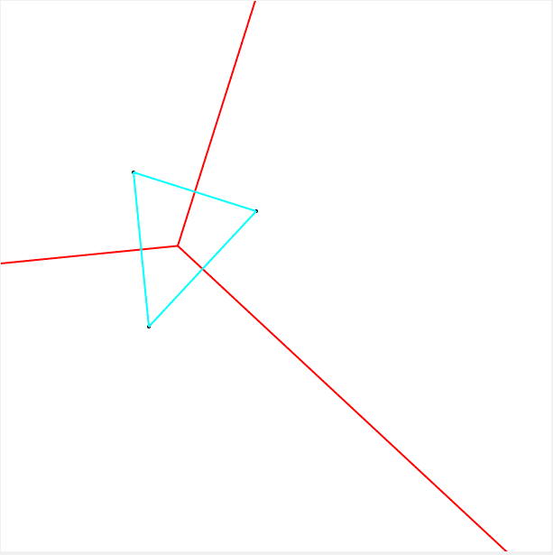

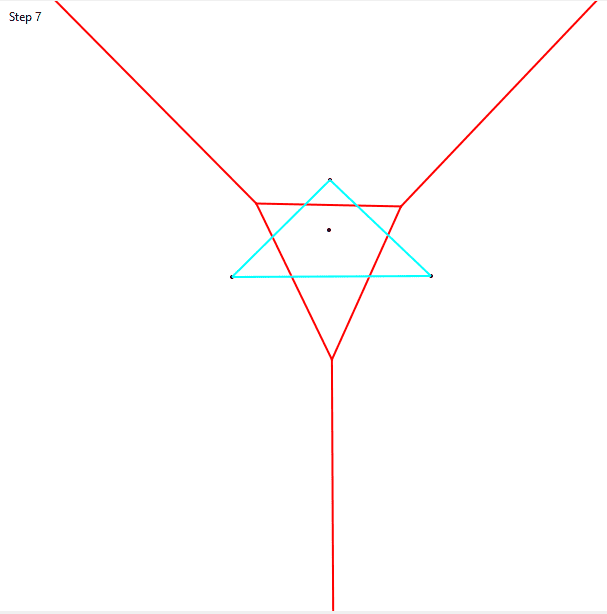
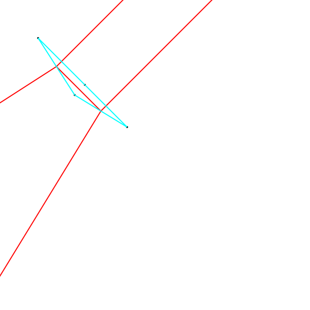
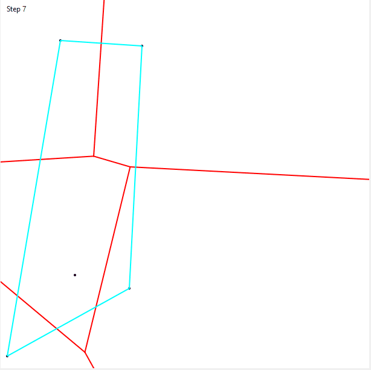

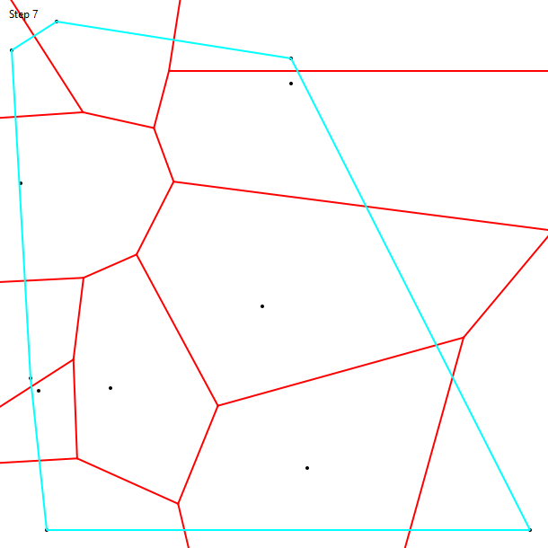

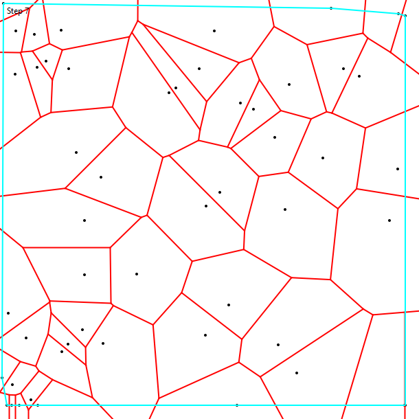
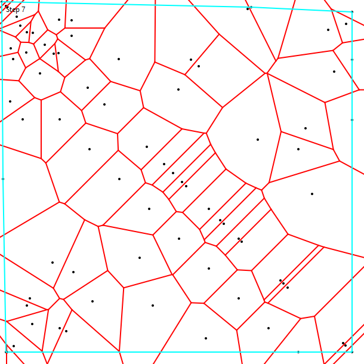


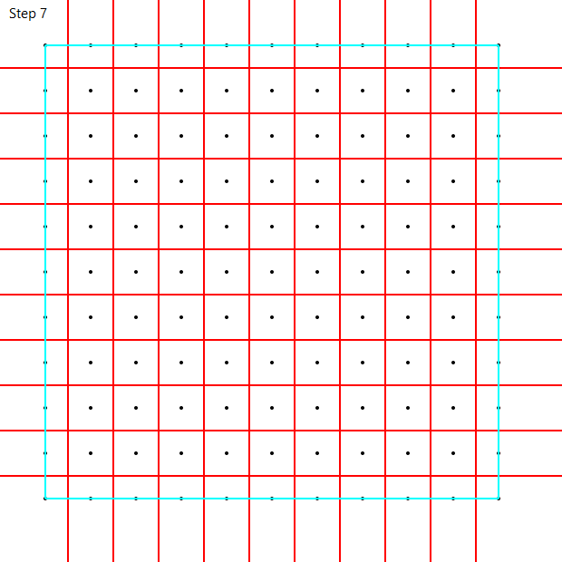
圖 12各點數的執行結果
5.4結果說明
所有測資（含特例：共線、網格）皆可正確執行。
原先 77、150、200 點會有未能正確移除的線段，原因是原本以座標 ±1600 判斷無限遠端點，但三點接近共線時，外心可能遠超過此範圍，被誤判為無限遠端點而無法消線。另外也修正了共線的子問題、hyperplane 找不到交點、四點共圓（網格）等特殊情況，修正方式見第 4 節。
已知限制：浮點數誤差容許值為 1e-6，距離小於此值的交點視為同一點；Voronoi 頂點座標需小於 FAR / 2 = 5e9，否則會被誤判為無限遠端點。輸入點在畫布範圍 [0, 610] 內時不會發生，因此手動輸入的座標限制在此範圍。
6結論與心得
在選擇 GUI 框架時，曾評估功能強大但體積較大的 Qt，以及輕量級的像 FLTK。經過嘗試後發現 FLTK 在圖形功能的實現很複雜，且實作後的繪圖效果不如 Qt，最終選擇了能讓我專注於 Voronoi diagram 演算法實作的 Qt 框架。
Qt 的開發體驗相當便利，內建的圖形資料結構（如 QPointF、QLineF）可直接應用。此外，僅需一行程式碼 painter.setRenderHint(QPainter::Antialiasing); 即可實現反鋸齒效果，Slots and Signals 的機制也讓互動設計更直覺。
在 Voronoi diagram 實作方面，雖然理論上能理解講義中的演算法，但將其轉化為程式碼時，發現許多細節處理比想像中複雜，因此在實作過程中耗費了許多時間進行除錯與邏輯驗證。
原先在 4 點以上的情況，偶爾會出現線段未能正確移除的問題，已找出原因並修正（見 5.4），目前所有測資與特例皆可正確執行。
7附錄
| 項目 | 連結 |
|---|---|
| 程式原始碼合併檔 | M143040074.txt |
| 原始碼（GitHub） | github.com/jyli0828/Voronoi_Diagram |
| 測試輸入檔 | 2~3point.txt、4~15point.txt、52,77,92,150,200.txt、collinear.txt |
| 測試輸出檔 | 見表 7；輸出格式範例：sample_output.txt |
| 隨機測資產生器 | pointGenerator.py（隨機生成 n 個點座標） |